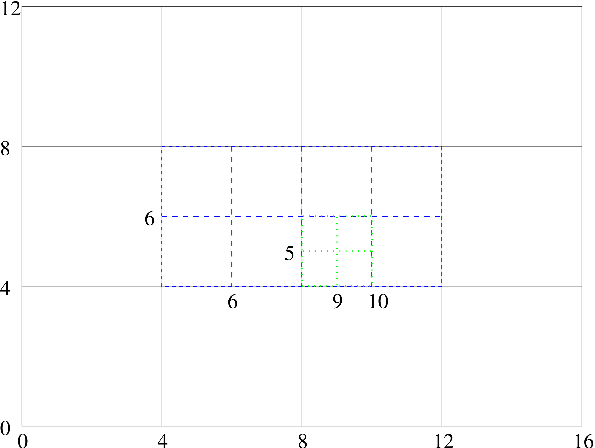
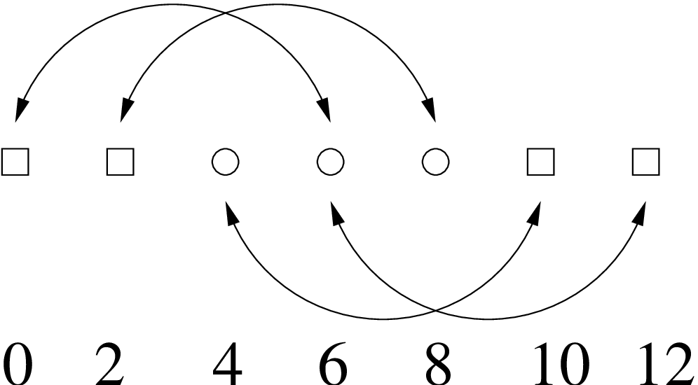
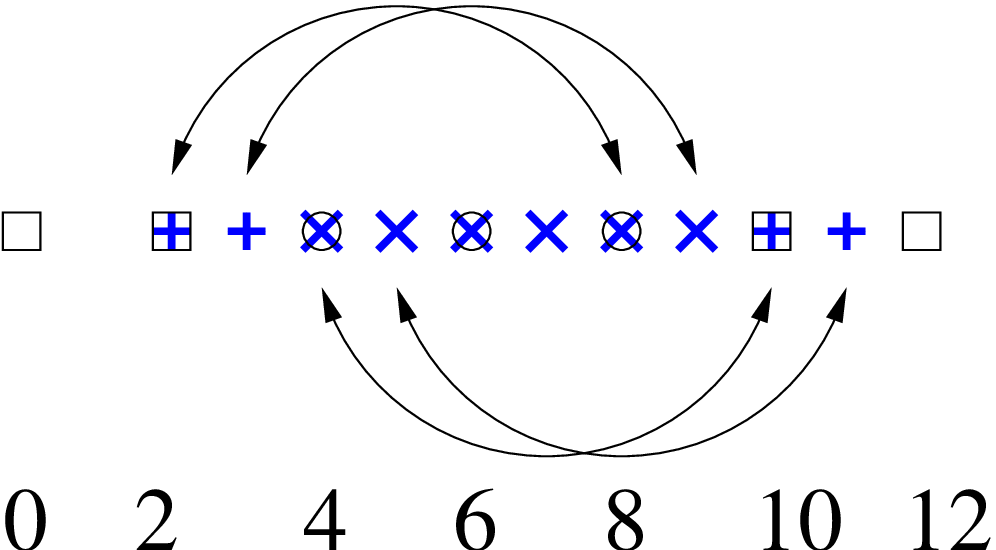

This text describes the Carpet arrangement. Carpet is a mesh refinement driver for Cactus that can replace PUGH, the standard unigrid driver. Carpet supports multiple refinement levels and multiple grid patches. Carpet can run in parallel, but not yet very efficiently so. Carpet does not yet support multiple grid hierarchies, i.e. shadow hierarchies or automatic convergence tests.
Fixed Mesh Refinement (FMR), also known as box-in-box, is a way to increase the local resolution in unigrid applications, while retaining the basic unigrid character of an application. A small number (maybe two or three) of grids with varying resolution overlay each other, where the coarsest grid has the largest extent. This allows the application to benefit from the higher resolution of the smaller grids while keeping the outer boundary far out at the same time. The main advantage of FMR are that it needs far less resources than globally increasing the resolution.
Carpet is the name of an FMR driver, i.e. the back end that handles storage allocation for the grid functions, parallelism, I/O, and the various inter-grid operations. Carpet was developed in early summer of 2000 by Erik Schnetter [Sch], then a research scholar in the Department for Astronomy and Astrophysics [AA] of Penn State University [Pen]. In spring 2001, Carpet was coupled to Cactus as a drop-in enhancement for the standard unigrid Cactus driver PUGH.
From the main Cactus web pages [Cac]:
Cactus is an open source problem solving environment designed for scientests and engineers. Its modular structure easily enables parallel computation across different architectures and collaborative code development between different groups. Cactus originated in the academic research community, where it was developed and used over many years by a large international collaboration of physicists and computational scientists.
A standard way of solving partial differential equations are finite differences on a regular grid. This is also called unigrid. Such an application discretises its problem space onto a single, rectangular grid which has everywhere the same grid spacing. This grid might be broken up into several parts for parallelisation purposes, but parallelisation should be transparent to the physics part of the application.
Increasing the resolution in a unigrid application is somewhat expensive. For example, increasing the resolution by a factor of two requires a factor of eight more storage in three dimensions. Given a constant Courant factor, the calculation time will even go up by a factor of sixteen. This behaviour makes it easy to find problems that cannot be solved on contemporary supercomputers, no matter how big and fast those computers are.
Apart from physical insight, which often has to be used to decrease the problem size until it fits the current hardware, there are also numerical and algorithmic methods to decrease the resource requirements of the application. Most applications need the high resolution only in a part of the simulation domain. Discretisation methods that don’t require a uniform resolution, such as finite elements, can implement non-uniform resolutions very naturally. One problem with finite elements is that many physicists today are not familiar with finite elements, or shy away from their perceived complexity, or are not willing to adapt existing finite difference code.
Fixed Mesh Refinement (FMR) is a poor man’s way of implementing a non-uniform resolution into a unigrid application with minimal changes to its structure. Instead of only one grid, there are several grids or grid patches with different resolutions. The coarsest grid usually encloses the whole simulation domain. Successively finer grids overlay the coarse grid at those locations where a higher resolutions is needed. The coarser grids provide boundary conditions to the finer grid through interpolation.
Instead of updating only one grid, the application has to update all grids. The usual approach is to first take a step on the coarsest grid, and then recursively take several smaller steps on the finer grids. The Courant criterion requires that the step sizes on the finer grids be smaller than on the coarse grid. The boundary values for the finer grids are found through interpolation in space and time from the coarser grid. In the end, the information on the finer grids is injected into the coarse grids.
Strictly speaking there is no need for a coarse grid on the regions covered by the finer grids. But as stated above, the resources required for treating the overlapping region on the coarse grid are only minimal compared to treating the finer grids. And because a coarse grid with a hole often creates complications, this obvious optimisation is often left out.
Carpet is a C++ library that provides infrastructure to describe regions of varying resolution in a convenient and efficient way. Carpet contains routines to manage grid hierarchies, containing the relationships between the components of the grid on the different refinement and convergence levels. Carpet has a notion of simulation time and grid spacing, which are necessary for interpolation, and contains efficient interpolators.
Carpet can run on several processors in parallel using MPI for communication. Each grid can be broken down into several components, and every component has a home processor. Carpet also contains operators to move certain regions to a different processor, or to synchronise all components of a grid.
Carpet is also an arrangement of thorns for Cactus, implementing a driver and associated I/O routines for both ASCII and binary I/O. It should be possible to substitute Carpet for the standard Cactus driver PUGH without changes to the application thorns and thus use Carpet as a unigrid driver. Making use of the FMR capabilities of Carpet usually requires some rearranging of the application, comparable in general to the changes necessary for a uniprocessor application to run on multiple processors.
The driver section of Carpet contains the logic to manage storage for the grid functions, to traverse the grid hierarchy for all scheduled routines, and to automatically apply the necessary inter-grid operators for prolongation (interpolation of the fine grid boundaries) and restriction (injecting the fine grid information back into the coarse grid).
The ASCII I/O routines use the quasi-standard gnuplot [gnu] format. The binary I/O routines use the FlexIO library [Sha] written by John Shalf. It allows efficient and platform independent I/O. The FlexIO format is based on HDF [HDF] and also supported by several visualisation packages.
Carpet is copyrighted by Erik Schnetter, and is available under the GPL licence from a CVS [CVS] repository.
Cactus comes with a sample application called WaveToy, which solves the scalar wave equation with various initial data and boundary conditions. An an example, I have extended WaveToy so that is uses Carpet’s FMR capabilities. WaveToy serves both as a test case for Carpet, and as example of how to convert an application to using FMR.
The equation solved by WaveToy is the well known scalar wave equation, discretised using the Leapfrog method with three time levels, yielding second order accuracy in space and time. A typical set of initial data are a plane wave, and a typical boundary condition is periodicity. Those allow long term simulations as well as easy and meaningful comparisons to the analytic solution.
Carpet has been written in C++, using templates and the STL (Standard Template Library). Both templates and the STL make writing and debugging code a lot easier. Without templates, I would have had to put much effort into making Carpet support all of Cactus’ data types. Without the STL, I would have had to spend quite some time implementing basic containers such as lists or sets. I still had to implement a custom vector type, because STL’s vector type is optimised for large vectors only, and I needed threedimensional vectors of integers.
The inner loops of Carpet are the inter-grid operators, that is the routines that copy, restrict, and prolongate between grids. Due to Cactus it was rather easy to write these in Fortran 77, which makes them both fast and portable.
Carpet is an arrangement in Cactus. It can theoretically be compiled without any external library, if you omit the binary I/O support which requires the FlexIO library. FlexIO is already part of Cactus in the thorn CactusExternal/FlexIO. I suggest that you enable support for the HDF format in the FlexIO library, although this is not necessary. For that, you have to install the HDF5 libraries first.
Some operating systems do not have a compliant STL (Standard Template Library) installed. If not, then you are in trouble. Carpet does make use of the STL, and there is no way around that.
Some compilers contain switches to instantiate some or all templates automatically. This usually does not work when files are put into libraries, which is what Cactus does. The scheme that I found working on all machines is to instantiate most templates by hand, and have the compiler instantiate the missing templates for every object file. This is the default for gcc. On SGIs, you have to pass the options -no_auto_include -ptused to the C++ compiler.
The C++ standard specifies a limit when using templates as template parameters. Carpet’s use of the GNU STL exceeds this limit. Gcc requires the option -ftemplate-depth-30 to enable this.
Unfortunately, PUGH and Carpet cannot yet be both compiled into a single application. (This will be fixed soon.) That means that you will have separate executables for unigrid and for mesh refinement applications.
Configuring Carpet is not quite trivial, because Cactus provides currently no way to autodetect the settings for Carpet. Hence you will have to set the settings manually. I propose that you start with on of the pre-made options files in the directory Carpet/Carpet/options. Try e.g. carpet-harpo-sgi for an SGI, or carpet-lilypond for Linux with gcc, or carpet-lilypond-ic for Linux with the Intel compilers. Once you have a working options file for your machine, send it to me, so that I can include it.
As for the thorn list: Carpet has its own ASCII output thorn, which outputs more information than CactusBase/IOASCII. The thorn list that I use is
CactusBase/Boundary # boundary (grid) [ ] { }
CactusBase/CartGrid3D # grid ( ) [ ] {driver}
#CactusBase/IOASCII # IOASCII (IO,Hyperslab) [ ] {IO}
CactusBase/IOBasic # IOBasic (IO) [ ] {IO}
CactusBase/IOUtil # IO ( ) [ ] { }
CactusBase/LocalInterp # LocalInterp ( ) [ ] { }
CactusBase/Time # time ( ) [ ] { }
CactusConnect/HTTPD # HTTPD (Socket) [ ] {Cactus}
CactusConnect/HTTPDExtra # http_utils (httpd,IO) [ ] { }
CactusConnect/Socket # Socket ( ) [ ] { }
CactusExternal/FlexIO # FlexIO ( ) [ ] { }
CactusExternal/jpeg6b # jpeg6b ( ) [ ] { }
CactusIO/IOJpeg # IOJpeg (IO,Hyperslab,jpeg6b) [ ] {IO}
CactusUtils/NaNChecker # NaNChecker ( ) [ ] { }
CactusWave/IDScalarWave # idscalarwave (wavetoy,grid) [ ] {grid}
CactusWave/IDScalarWaveC # idscalarwave (wavetoy,grid) [ ] {grid}
CactusWave/IDScalarWaveCXX # idscalarwave (wavetoy,grid) [ ] {grid}
#CactusWave/IDScalarWaveElliptic # idscalarwaveelliptic (grid,wavetoy,ellbase) [ ] {idscalarwave}
CactusWave/WaveBinarySource # binarysource (wavetoy,grid,idscalarwave) [ ] { }
CactusWave/WaveToyC # wavetoy (Grid,Boundary) [ ] { }
CactusWave/WaveToyCXX # wavetoy (Grid,Boundary) [ ] { }
CactusWave/WaveToyF77 # wavetoy (Grid,Boundary) [ ] { }
#CactusWave/WaveToyF90 # wavetoy (Grid,Boundary) [ ] { }
#CactusWave/WaveToyFreeF90 # wavetoy (Grid,Boundary) [ ] { }
Carpet/Carpet # driver (CarpetLib) [ ] {Cactus,IO}
Carpet/CarpetIOASCII # IOASCII (CarpetLib,driver,Hyperslab) [ ] {IO}
Carpet/CarpetIOFlexIO # IOFlexIO (CarpetLib,driver,Hyperslab,FlexIO) [ ] {IO}
#Carpet/CarpetIOHDF5 # IOHDF5 (CarpetLib,driver,Hyperslab) [ ] {IO}
#Carpet/CarpetIOSer # IOSer (CarpetLib,driver,Hyperslab) [ ] {IO}
Carpet/CarpetLib # CarpetLib ( ) [ ] { }
Carpet/CarpetReduce # reduce (CarpetLib,driver) [ ] { }
Carpet/CarpetRegrid # CarpetRegrid (CarpetLib,driver) [ ] { }
Carpet/CarpetSlab # Hyperslab (CarpetLib,driver) [ ] { }
The thorns prefixed with # are disabled. IOASCII conflicts with CarpetIOASCII. I disabled IDScalarWaveElliptic because there is no elliptic solver for mesh refinement, and I disabled WaveToyF90 and WaveToyFreeF90 because gcc does not yet contain a Fortran 90 compiler. CarpetIOHDF5 is not yet finished, and CarpetIOSer needs the Ser library which is not publically available.
The CactusConnect, CactusIO, and CactusUtils thorns are not necessary, but are nice to have around. You can safely omit these.
Although Carpet works fine with the standard WaveToy thorns, all the example parameter files in the CactusWave arrangement use PUGH, and can therefore not be directly used.
The coordinate thorn CactusBase/CartGrid3D does not provide periodic boundary conditions. These are normally provided by the driver PUGH. However, Carpet does not contain any boundary conditions. If you want to apply periodic boundaries, you will therefore have to use the AlphaThorns/Cart3d coordinate thorn instead, which does provide periodicity. Unfortunately, AlphaThorns/Cart3d is incompatible with CactusBase/CartGrid3D. There is a version of WaveToy in the Carpet arrangement that has been adapted to AlphaThorns/Cart3d. I suggest that you use this version of WaveToy instead of CactusWave to run test problems, because periodicity makes for nice testing setups.
You can find quite a few example parameter files in the directory Carpet/WaveToyF77/par. I especially recommend the wavetoyf77_periodic_* set, which comes in two sizes (coarse and fine, corresponding to a small and a large simulation domain) and three different refinement hierarchies (with one, two, and three level altogether, respectively). This set thus forms a convergence test, which you can run and test yourself. The set wavetoyf77_rad_full_* uses radiative instead of periodic boundaries and should also be nice to look at. The file wavetoyf77_rad_automatic.par is an attempt at adaptive mesh refinement, which may or may not work, depending on the current status of Carpet.
Second order convergence requires second order interpolation in time, which requires that at least three time levels are present.
There are three steps to take from a simple unigrid uniprocessor toy application to a full-blown FMR multiprocessor production application. Those steps are almost independent, and I would like to explain them and their implications in some detail below.
The probably best known of these is the step from using one to using several processors, also known as parallelisation. Because many people are already familiar with this step, I will describe it first.
In a uniprocessor application, it is possible to access every grid point in arbitrary manners. In order to allow multiple processors to run efficiently in parallel, the grid is broken down into several rectangular components, and each processor is assigned one of these components.
The components will usually overlap by a few grid points, so as to allow the processors to e.g. calculate spatial derivatives (which require neighbouring grid points) without having to communicate for every grid point. From time to time it is then necessary to synchronise the overlapping region, which is the only time at which communication happens. This allows the application to run almost unchanged, i.e. without invoking communication itself. The synchronisation routine is provided by the driver and not by the application.
Of course a serial applicate usually will have to be changed to support multiple processors. In order to do so, all the operations that the application performs have to be classified into one of two categories:
One category contains the so-called local operations. These are operations that are applied to each and every grid point individually, and that do not depend on any other grid point except nearby neighbours. Each local operation will thus involve a loop over all grid points, and in order to run on multiple processors, after each such loop the synchronisation routine has to be called. An example of a local operation would be calculating a spatial derivative.
The other category contains so-called global operations. These operations do not depend on individual grid points, and thus do not involve loops over grid points. The result of a global operation is the same on all processors; therefore global operations don’t involve communication and don’t require synchronisation. An example of a global operation would be to check how many time steps have been taken, and decide whether the simulation should be terminated.
Typically most operations can be classified or rewritten to be either local or global. But often there are operations that fit neither category, and these parts of an application are hardest to parallelise. Applying the boundary conditions, to give another example, might seem at first to be neither local nor global. But in a slight (yet completely correct) stretch of the term ”applied to all grid points”, boundary conditions can be classified as local; they are a local operation that just does nothing to most grid points.
To give one more example, calculating an error norm does not fit these categories. It is neither local nor global. It is not local because the results involved all grid points (and not only nearby neighbours), and it is not global because it does involve the grid points. All operations that do not fit the two category require typically special handling, and often require hand-coded communication in the application. Luckily calculating various norms is such a common case that there are special routines for that already present, called reduction operators.
There are several reasons why an application might want to incorporate more than one grid, overlapping and each with a different resolution.
The most commonly known reason is probably a convergence test, where the very same problem is treated in different resolutions. Differences in the result are then likely caused by insufficient resolution on the coarser (or on all) grids. For a convergence test, the grids are completely independent, and it does not matter whether the simulation runs on all grids simultaneously or sequentially. In order to treat the grid sequentially, the application does not have to be changed at all.
The reason of interest here is of course FMR. For FMR, the order in which the grids are treated is fixed. As described above, there is first a time step on the coarse grid, and then recursively several smaller steps on the finer grids. This order does require certain changes in the application. The sequence of operations that form a single time step have to be identified and isolated. (Which is to say that there has to be a routine that calculates a time step, that is, a complete time step, and nothing else.) It is then the task of the FMR driver to call this routine for the correct grids in the correct order.
Other reasons for multiple resolution levels are e.g. multigrid algorithms for elliptic equations, which I do not want to mention here, or shadow hierarchies to determine truncation errors, which I also want to skip here. Shadow hierarchies are very similar to the convergence levels described above.
Apart from this order in which the operations are performed on the grids, there is one more complication for FMR. The boundary values of the finer grids have to be calculated from the coarser grids through interpolation. An because the time steps on the finer grids are smaller, there is not always a corresponding value on the coarser grids available. This makes it necessary to interpolate in time between time steps on the coarser grids. The alternative would be to take smaller steps on the coarser grids, and this would be very expensive.
These interpolations in time make it necessary that the driver knows which grid function contains values corresponding to what time. The usual way to achieve this is to have several time levels per grid function; three time levels allow for a second order interpolation in time. Only grid functions with enough time levels can be interpolated, i.e. boundary conditions can be calculated only for those.
Fortunately time levels are rather widespread in applications, so they are no new concept to introduce. Unfortunately they are often abused, so that values corresponding to the wrong time are stored in a time level, usually with the excuse of saving storage. This will in general not work with FMR, because the driver then cannot interpolate in time, leading to incorrect values on the boundaries of the finer grids.
Sometimes it is convenient to have a simulation domain that is not a rectangle. It might instead be an L-shaped simulation domain, or a domain that consists of two disconnected rectangular regions. This issue becomes more important with FMR, because there it is often convenient to have several disconnected refined regions. As long as there are enough processors available, each processor can be assigned a region or a part thereof, and no new concept need be introduced. If, however, there are fewer processors than regions, then a new problem arises.
A common case for that problem might be a simulation containing just two refined regions, and running on a single processor. The refined grid the consists of two component. The problem then is that the two components cannot be treated sequentially: Imagine the time evolution routine working on (say) the first component. It will at some time call the synchronisation routine. At that time there are no values from the second component available, because the second component has not been treated yet. Therefore the synchronisation routine cannot complete. That means in turn that the time evolution routine cannot complete working on the first component, leading to a deadlock. Work on neither component can be completed before work on the other component.
The solution is to break up the time evolution routine into several smaller routines, each consisting of a single either local or global operation. (“Local” and “global” have here the exact same meanings that were defined above for parallelisation.) A local operation works, by definition, on individual grid points. Hence the local routines have to be called once for every grid component. A global operation, by definition, does not depend on individual grid points. Hence it has to be called only once per processor, and not once per component. That means that the driver has to be told the category individual routine is in.
Let me finish this section with an detailed example. Suppose you want to solve the equation
integrating using the midpoint rule, i.e. the simplemost second-order time integration scheme. Given values at the previous time \(u^{n-1}\), one first calculates a first order solution using an Euler step, leading to the intermediate result
The second and final step is then calculated via
The corresponding pseudo code would look like
Calculate Euler step, storing the result into \(u^n\)
Apply boundary conditions to \(u^n\)
Synchronise \(u^n\)
Calculate average of \(u^{n-1}\) and \(u^n\), storing the result into \(v^n\)
Calculate second step, storing the result again into \(u^n\)
Apply boundary conditions again to \(u^n\)
Synchronise again \(u^n\)
The above algorithm looks a bit different from a naive implementation of the midpoint rule. One difference is that both the first and the second step store their result into \(u^n\). This is necessary because it would be inconvenient to apply boundary conditions to the intermediate value \(v^n\). Remember, in order to apply boundary conditions on the finer grids, there have to be several time levels present. With the above scheme, only \(u\) needs several time levels. \(v\) is used only as a temporary (and could conceivably be completely eliminated).
Note also that the first step goes all the way from time level \(n-1\) to time level \(n\). The midpoint rule can be rewritten (in fact, is usually written) so that the first step is only a half step, leading to the time level \(n - \frac {1}{2}\). This is not possible for FMR, because interpolating to the time \(n - \frac {1}{2}\) is not possible, and thus there could be no boundary conditions applied after the first step.
The second thing to note is that the application of the boundary condition and the synchronisation have been separated rather artificially. Normally synchronisation would be considered part of the boundary condition. In this case, however, the applying the boundary condition is a local operation, whereas synchronisation counts as global operation. (It is not obvious that synchronisation should be global, but as the synchronisation routine is a part of Carpet, it was up to me to decide this.) As explained above, local and global operations have to be separated.
Separating the evolution steps and the boundary condition routines is, on the other hand, just a notational convenience. There could well be a single routine implementing both.
For Cactus, the order in which to call the individual parts of the time evolution routines is described in the schedule routines, i.e. in the files called schedule.ccl. By default a routine is assumed to be local; global routines have to be tagged with OPTIONS: GLOBAL.
The tag SYNC: groupname indicates that the group groupname should be synchronised after the scheduled routine has been called for all grid components. This obviously makes sense only for local routines. Using the SYNC: tag is preferred over calling the synchronisation routine CCTK_SyncGroup directly.
The example thorn WaveToy in Carpet’s arrangement is a bit simpler than what is described here, because it uses the Leapfrog scheme which consists of only a single step. I would suggest looking at WaveToy as an initial FMR example.
The thorn SpaceToy is implemented very close to the way described here. It evolves two variables phi and psi, but it is also coupled to the thorn HydroToy. This coupling introduces some additional complications. The thorn HydroToy, on the other hand uses a predictor-corrector scheme, which is also a two step scheme and thus more complex that WaveToy. All the coupling between SpaceToy and HydroToy is contained in SpaceToy. I would thus suggest looking at HydroToy first.
I assume that converting an application to FMR is straightforward after handling the time levels has been straightened out.
The text is this section was extracted from email threads on the Carpet developers mailing list from 2006-August and 2006-September.
Special timers have been added to both Carpet and CarpetLib so that it would be easier to attribute time spent to different parts of a simulation. These timers do not work as standard Cactus timers. Here is how to use their timing mechanisms:
When measuring the performance of a simulation, one has to work on two levels. On the higher level, one needs to attribute time spent to different routines in different thorns. In addition to the existing Cactus timers, which measure the time for each scheduled routine, there are now timers in Carpet, measuring the following times:
Evolve total time in evolution
Evolve::do_terminate determine whether to terminate
Evolve::AdvanceTime cycle time levels
Evolve::PreRegrid determine new grid structure
Evolve::Regrid change grid structure
Evolve::PostRegrid re-initialise after grid structure changes
Evolve::EvolutionI the ”physics” time stepping
Evolve::Restrict copying fine grid values to coarser grids
Evolve::EvolutionII analysis and I/O
We suggest to active the thorn AlphaThorns/MPIClock. This is a timer based on MPI’s Wtime function, measuring wall time, but also measuring how ofter the timer was started, and keeping track of the average time and the standard deviation. We also suggest to use CactusUtils/TimerReport to output these timers every few coarse grid time steps.
Use Carpet::output_timers_every to activate these timers.
These timers should be understandable to every Cactus user who has written a thorn. You can use them to find out what part of your simulation you need to optimise. Keep in mind that Cactus’s cumulative timing numbers for complete scheduling bins are wrong (there is double-counting if routines are scheduled multiple times), only the times for individual routines are correct.
On a lower level, and when running on many processors, one needs to find out which processor spends how much time in what stage of communication. We introduced special, non-Cactus timers for that. These timers measure the wall clock time,its average, its standard deviation, and the number of time measurements. They also measure how many bytes were transferred in total, how many communications there were, and the average and standard deviation.
Use CarpetLib::print_timestats_every to activate these timers.
Note that understanding these timers probably requires some in-depth knowledge of Carpet’s communication mechanism.
In order to measure the performance of a mesh refinement simulation on multiple processors, I suggest to use parameters such as the following:
# Activate standard Cactus timer output Cactus::cctk_timer_output = full # Activate an additional clock based on MPI # (important for runs on multiple processors) ActiveThorns = "MPIClock" # This thorn is in AlphaThorns # Produce timing information in regular intervals # (important since runs may abort early) ActiveThorns = "TimerReport" # This thorn is in CactusUtils TimerReport::out_every = 1024 # Activate Carpet timers # (using additional timers for mesh refinement related activities) Carpet::output_timers_every = 1024 # Activate CarpetLib timers # (measuring inter-processor communication) CarpetLib::print_timestats_every = 1024 CarpetLib::print_memstats_every = 1024
You should replace the number 1024 with a number of iterations that corresponds to several coarse grid time steps; timing output every ten minutes or so would be reasonable.
Currently all timer output goes to stdout. That will be improved soon.
The individual thorns in the Carpet arrangement might contain further documentation, which is also available in the thorn guide. Additionally, there is a document internals.tex in the arrangement’s doc directory, and a document threelev_initdata.tex in thorn Carpet’s doc directory.
Here are a few of the more frequently asked questions with some answers.
If I run without any refined grids, why don’t I get the same results as with PUGH?
There are two possible reasons. The most common is that the you are not comparing exactly the same output. It used to be the case that norms would disagree (this is no longer the case). If it is the ASCII output that disagrees, then you should note that the default output format for CarpetIOASCII gives more digits than CactusBase/IOASCII. If you want to get “identical” results for this output, try setting IOASCII::out_format = ".14f").
The second reason is subtle differences are bugs in the implementation. Good luck finding these...
I switch on a refined grid. Why do I not see it output? Why is the output strange?

As soon as you switch on refinement the way the grids are numbered by index changes. The numbering is done with respect to the finest grid but covers the entire domain. An example of how the numbering works is given in figure 1. It is important to note that this also applies to the numbering in time. So with the grid structure of figure 1 output for the coarsest grid only occurs on iterations \(0,4,8,\dots \), for the medium grid only on iterations \(0,2,4,\dots \), and for the finest grid on iterations \(0,1,2,\dots \). Note that here the finest grid is not the finest existing grid, but the finest possible grid. This is controlled by the Carpet::max_refinement_levels parameter.
So, there are plenty of reasons why the output might be strange:
You are requesting output on iterations when not all grids are output. For example, requesting output every \(5^{\text {}th}\) iteration with the above grid structure would only output the coarse grid every 20 iterations.
You are requesting output along an index that does not intersect with any grid points. For example, the line defined by \(j = 6\) in the example above corresponds to the center of the box, but does not intersect the coarse grid at all!
Requesting output along a line defined by a coordinate value will give you the index closest to it. This may not agree on the different refinement levels. In the example above the coordinate value \(y=5.1\) is closest to \(j=5\) on the fine grid, \(j=6\) on the medium grid, and \(j=4\) on the coarse grid. All the different lines will be output but you should not expect points that appear to overlap in the output to agree as they’re actually not at the same point.
CarpetRegrid (which sets up the refined boxes) knows nothing about symmetries. So if you have a simulation in, for example, octant mode with \(x,y,z\in [0,10]\) and you leave all the parameters to be the defaults, the following will happen:
CarpetRegrid creates a refined box at the center of the index space. This might cover something like \(x,y,z\in [3,7]\).
When the IO thorn requests the output lines and planes it does know the symmetries, so tries to put the lines and planes as close to the origin \(x=y=z=0\) as possible.
When output occurs the lines and planes don’t intersect the fine grid and so you get no output.
Morals: Comparing 1D output on different refinement levels can be very frustrating. 2D output is usually much more informative. Using symmetry conditions with Carpet is tricky.
I want to run with periodic boundaries. Why aren’t things working correctly?
You thought symmetry boundaries were bad? Periodic boundaries are even worse.
Firstly, Carpet does not itself implement periodic boundaries. The thorn TAT/Periodic is “more or less” driver independent and does. This should be used to implement the actual boundary conditions. You should not need to change your code – just activate the thorn with the appropriate parameters.
Secondly, periodic boundaries do not work the same way as symmetry boundaries. This is because you cannot specify a point in coordinate space where the boundary actually lies; it really lies in the index space. The following example will hopefully help.
Take a 1D slice through the grid. There are 7 points with 2 boundary (ghost) zones (0,2 and 10,12), so only 3 points are actually being evolved (4, 6, 8). Periodic boundaries means that the boundary points are identified with certain evolved points. For example, point 2 is to the left of the first evolved point and so must be identified with the last evolved point (8). The identifications are shown in figure 2.

We then want to place a refined region across the entire width of the domain but also have the correct periodic boundaries. The crucial point is to ensure that points that are identified on the coarse grid are identified in the same way on the fine grid. For example, point 2 must still be identified with point 8. Therefore point 2 must remain a boundary point and point 8 an interior point. Point 4 must also be identified with point 10. There are therefore 2 possibilities:
Point 3 is the first interior point on the refined grid and point 8 the last. Therefore the point to the “left” of point 3, point 2, is still identified with point 8.
Point 4 is the first interior point on the refined grid and point 9 the last. This possibility is illustrated in figure 3.

So to specify the particular refined grid shown in figure 3 you would specify a lower bound of 2, an upper bound of 11, and that both boundaries are outer boundaries. An example for a \(44 \times 7 \times 7\) grid where the “centre half” of the grid in the \(x\) direction is refined and the refined region covers the entirety of the \(y\) and \(z\) directions, you could use
carpet::max_refinement_levels = 2
carpetregrid::refinement_levels = 2
carpetregrid::refined_regions = "manual-gridpoint-list"
carpetregrid::gridpoints = "[ [ ([22,2,2]:[62,11,11]:[1,1,1]) ] ]"
carpetregrid::outerbounds = "[ [ [[0,0],[1,1],[1,1]] ] ]"
[AA] Department for Astronomy and Astrophysics, http://www.astro.psu.edu/.
[Cac] Cactus web pages, http://www.cactuscode.org/.
[CVS] CVS, http://www.cvshome.org/.
[gnu] gnuplot, http://www.gnuplot.info/.
[HDF] HDF, http://hdf.ncsa.uiuc.edu/.
[Pen] Penn State University, http://www.psu.edu/.
[Sch] Erik Schnetter, <schnetter@uni-tuebingen.de>.
[Sha] John Shalf, FlexIO library: http://zeus.ncsa.uiuc.edu/~jshalf/FlexIO/.
[TAT] Theoretische Astrophysik Tübingen, http://www.tat.physik.uni-tuebingen.de/.